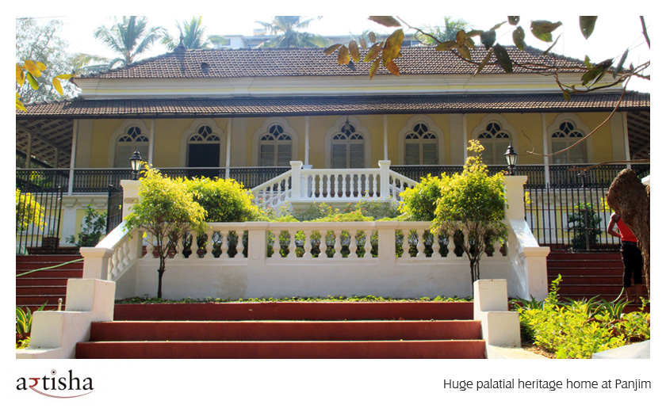
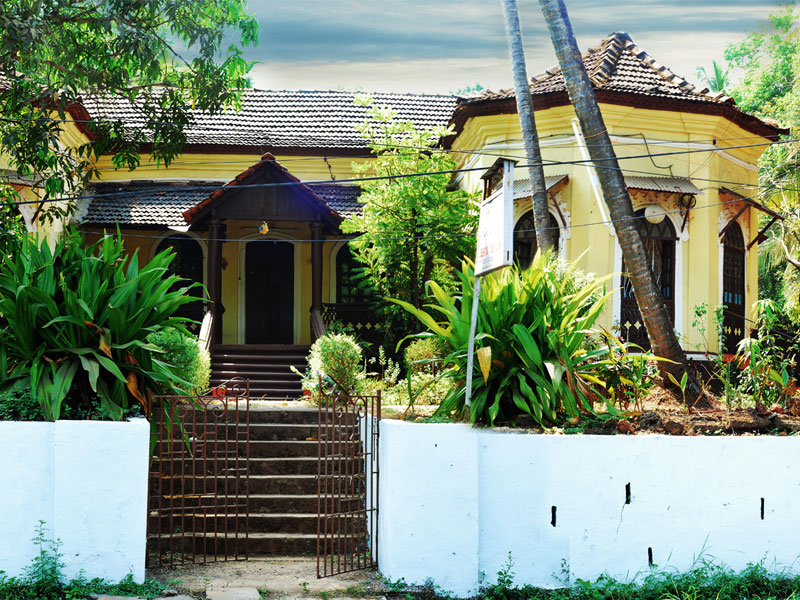
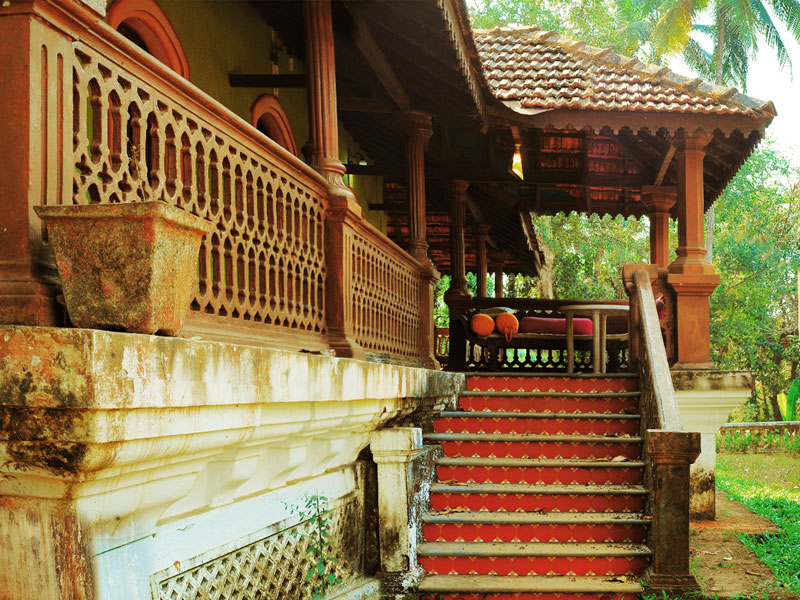
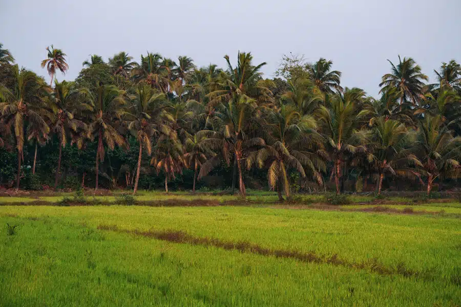
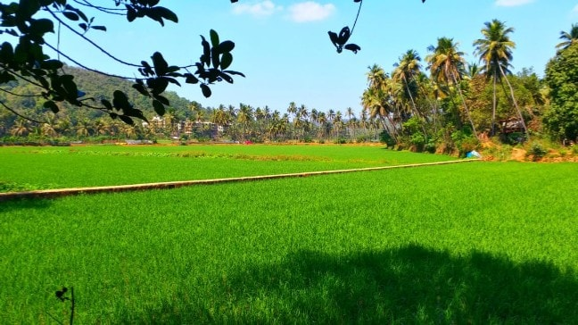

Goa’s rural life thrives in its picturesque villages, where tradition and nature coexist harmoniously. Villages like Saligao, Chandor, and Loutolim are known for their heritage homes with red-tiled roofs, ornate balustrades, and wide verandas. These homes often have lush gardens filled with coconut trees and flowering plants, creating a serene ambiance. Life in these villages revolves around simplicity, with people engaging in farming, fishing, or toddy tapping.
  Agriculture plays a vital role in rural Goa, with sprawling paddy fields and coconut plantations painting the landscape green. Farming is more than just a livelihood here; it’s a community activity celebrated with rituals and festivals. During monsoons, the lush fields come alive, offering a glimpse of Goa’s agrarian roots. Water buffaloes and traditional tools can still be seen in many villages, keeping the old-world charm intact.
 